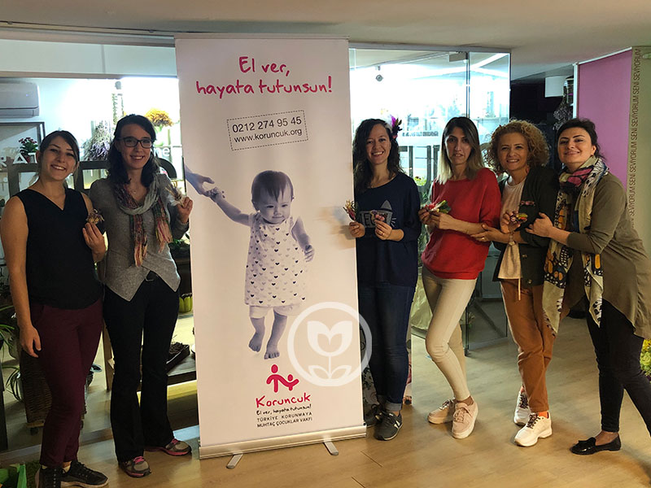
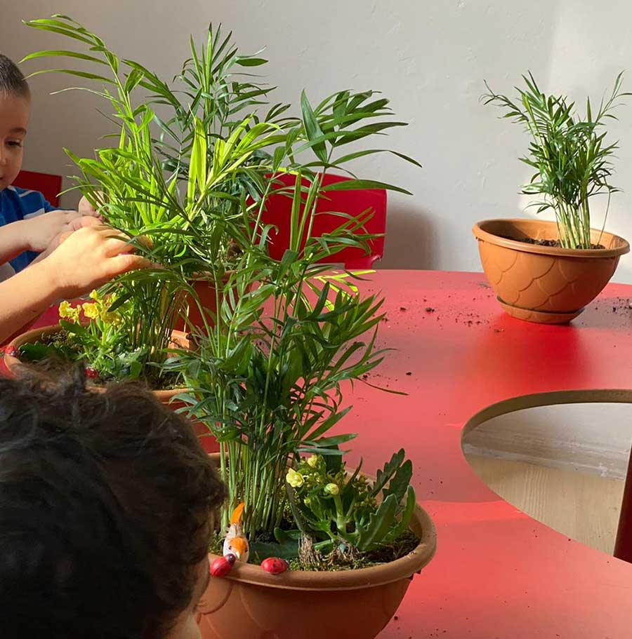

Sürdürülebilirlik2 proje
Paylaştıkça var olacağımızı düşünüyoruz
AFLODAY olarak biz: inançla atılan her adımın bir fayda, bir katkı ve değer yaratma, bir hayali yaşatma olduğuna inanıyoruz. Paylaştıkça da var olacağımızı düşünüyoruz.
Sürdürülebilirlik projesi
Gülümseyen Yarınlar Projesi
Çiçeklerle Gülümseyen Yarınlara Gönüllü Olduk
AFLODAY Doğadan Gelişim Atölyesi olarak; paylaştıkça var olacağımızı düşünüyor, topluma fayda sağlamayı görev biliyoruz.
Küçük de olsa her işletme odaklandığında ve stratejik hareket ettiğinde topluma bir konuda katkı sağlayabilir, fayda yaratabilir biliyoruz. İddiamız proje sonunda yarattığımız etkiyi belgeleyerek küçük işletmeler için de bir model oluşturmak.
Haklarından yoksun çocukların temel haklarına kavuşabilmesine, iyi bir geleceğe sahip olmasına ve topluma geri kazandırılmasına destek olma amacını güden projede; hakları ihlal edilen çocuklarla ilgili farkındalık yaratmak, şartlarını iyileştirmek üzere toplumu bilinçlendirmek, gönüllüğü teşvik etmek üzere çalışıyoruz.
2019 yılında başlattığımız projenin kısa vadede hedefi online atölyelerle her yıl 1000 kişiye ulaşıp konu ile ilgili farkındalık yaratmak, uzun vadeli hedef ise; çocuk haklarını korumak, sağlıklı toplum için sağlıklı çocuklar yetişmesine destek sağlamak üzere toplumu bilinçlendirmek.

ProjeSürdürülebilirlik
Sürdürülebilirlik projesi
Geleceği Yeşil Tasarla Projesi
Doğaya ve Topluma Sorumluluk
Geleceği Yeşil Tasarla Projesi, çevresel sürdürülebilirlik kapsamında yetişkin ve çocuklarda davranış geliştirmeyi hedefleyen bir sürdürülebilirlik projesidir.
Proje; doğaya duyarlılık ve çevre bilinci oluşturmayı amaçlayarak, doğal kaynakların korunması, sürdürülebilir kaynak yönetiminin sağlanması ve bireylerde olumlu davranış değişiklikleri oluşturmayı hedefliyor.
Bu kapsamda doğadan ilham alarak yetişkinler ve çocuklarla doğadan sürdürülebilir hobi atölyeleri düzenliyor, interaktif online seminerlerle de bu bilinci yerleştirmeye, toplumda sorumlu bireylerin yetişmesine katkı sağlamayı, bireylerin karbon ayak izini azaltmayı amaçlıyoruz.
Doğadan ilham alan hobi atölyeleri ve interaktif online seminerler sayesinde katılımcılarımız, çevreye duyarlılık konusunda bilinçlenirken aynı zamanda iklim değişikliği ile mücadelede nasıl bir rol üstlenebileceklerini öğreniyorlar. Projemiz, yetişkinlerde ve çocuklarda sürdürülebilir davranış değişikliği sağlayarak toplumda daha sorumlu ve çevreye duyarlı bireylerin yetişmesine katkıda bulunmayı da amaçlıyor.

ProjeSürdürülebilirlik